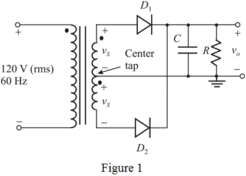

Step 1:
The center tapped full wave rectifier is shown in Figure 1.

Step 2:
Calculate the entire secondary winding voltage.
Calculate the output peak voltage.
The voltage for each winding is (because it is a center tapped),
Step 3:
(a)
Write the expression for the ripple voltage in ideal case.

Write the expression for the ripple voltage in practical case.
(i)
Consider that the ripple voltage is 10% of the peak voltage and write the expression for
 .
.
Substitute  for
for  and 60 Hz for
and 60 Hz for  .
.
Therefore, the capacitor chosen is .
Step 4:
Calculate the average output voltage.
Therefore, the average output voltage is .
Step 5:
(ii)
Consider that the ripple voltage is 1% of the peak voltage and write the expression for
Step 6:
Substitute for

and 60 Hz for

.
Therefore, the capacitor chosen is .
Calculate the average output voltage.
Therefore, the average output voltage is .
Step 7:
(b)
Write the fraction of cycle for the diode conduction.
Here
is conducting angle, that is,
(i)
The ripple voltage is  of the peak voltage. Calculate the conducting angle.
of the peak voltage. Calculate the conducting angle.
The fraction for the diode conduction is,
Therefore, the fraction for the diode conduction is .
Step 8:
(ii)
The ripple voltage is  of the peak voltage. Calculate the conducting angle.
of the peak voltage. Calculate the conducting angle.
The fraction of cycle for the diode conduction is,
Therefore, the fraction for the diode conduction is .
Step 9:
(c)
Write the formula for the average diode current in ideal case.
Write the formula for the average diode current in practical case.

Step 10:
(i)
The ripple voltage is  of the peak voltage. Calculate the average current,
of the peak voltage. Calculate the average current,  .
.
Therefore, the average diode current is  .
.
Step 11:
(ii)
The ripple voltage is  of the peak voltage. Calculate the average current,
of the peak voltage. Calculate the average current,  .
.
Therefore, the average diode current is .
Step 12:
(d)
Write the formula for peak diode current in ideal case.
Write the formula for peak diode current in practical case.
(i)
The ripple voltage is  of the peak voltage. Calculate the average current, .
of the peak voltage. Calculate the average current, .
Therefore, the peak diode current is .
Step 13:
(ii)
The ripple voltage is  of the peak voltage. Calculate the average current,
of the peak voltage. Calculate the average current,  .
.
Therefore, the peak diode current is .